Transmission Fluid Cooler Hose/Pipe Quick-Connect Fitting Replacement
Transmission Fluid Cooler Hose/Pipe Quick-Connect Fitting Replacement
Removal Procedure
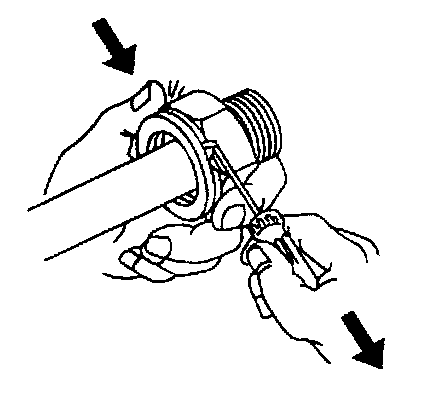
Important: Perform the following procedure when removing the retaining rings and cooler lines from the quick connect fittings located on the radiator and/or the transmission.
1. Pull the plastic cap back from the quick connect fitting and down along the cooler line about 5 cm (2 in).
2. Using a bent-tip screwdriver, pull on one of the open ends of the retaining ring in order to rotate the retaining ring around the quick connect fitting until the retaining ring is out of position and can be completely removed.
3. Remove the retaining ring from the quick connect fitting.
4. Discard the retaining ring.
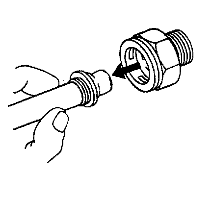
5. Pull the cooler line straight out from the quick connect fitting.
Installation Procedure
Important:
^ Do not reuse any of the existing oil lines or oil line fittings if there is excessive corrosion.
^ Do not reuse any of the existing retaining rings that were removed from the existing quick connect fittings. Install new retaining rings.
^ Ensure the following procedures are performed when installing the new retaining rings onto the fittings.
Install a new retaining ring into the quick connect fitting using the following procedure:
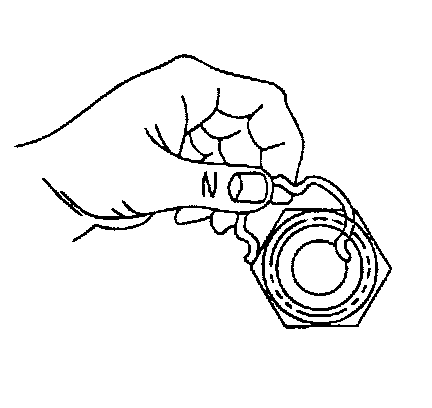
1. Hook one of the open ends of the retaining ring in one of the slots in the quick connect fitting.
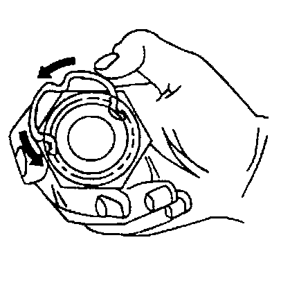
2. Rotate the retaining ring around the fitting until the retaining ring is positioned with all 3 ears through the 3 slots on the fitting.
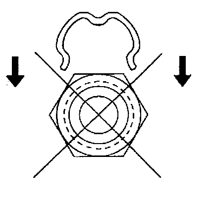
3. Do not install the new retaining ring onto the fitting by pushing the retaining ring.
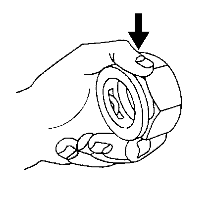
4. Ensure that the 3 retaining ring ears are seen from inside the fitting and that the retaining ring moves freely in the fitting slots.
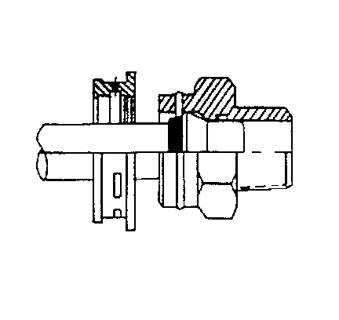
5. Install the cooler line into the quick connect fitting.
6. Insert the cooler line end into the quick connect fitting until a click is either heard or felt.
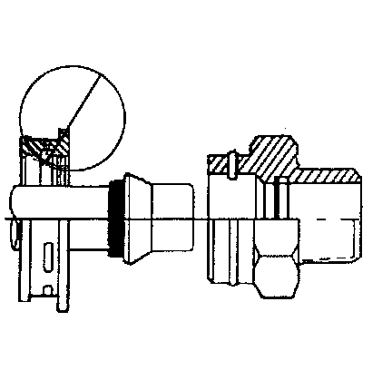
7. Do not use the plastic cap on the cooler line in order to install the cooler line into the fitting.
8. Pull back sharply on the cooler line in order to ensure that the cooler line is fastened into the quick connect fitting.
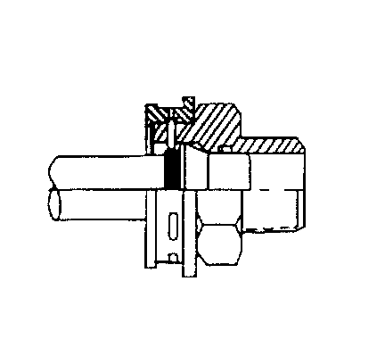
Important: Do not manually depress the retaining clip when installing the plastic cap.
9. Position (snap) the plastic cap onto the fitting. Do not manually depress the retaining ring when installing the plastic cap onto the quick connect fitting.
10. Ensure that the plastic cap is fully seated against the fitting.
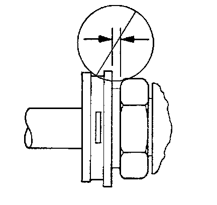
11. Ensure that no gap is present between the cap and the fitting.
12. Ensure that the yellow identification band on the tube is hidden within the quick connect fitting.
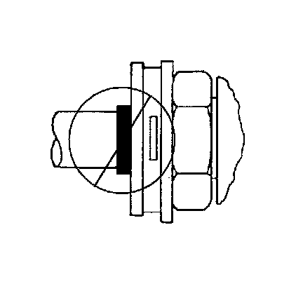
13. A hidden yellow identification band indicates proper joint seating.
14. Fill the transmission to the proper level with DEXRON(R) VI transmission fluid. Refer to Transmission Fluid Checking.